Well-designed indoor scenes should prioritize how people can act within a space rather than merely what objects to place. However, existing 3D scene generation methods emphasize visual and semantic plausibility, while insufficiently addressing whether people can comfortably walk, sit, or manipulate objects.
We present a Behavior-Aware Anthropometric Scene Generation framework that leverages vision–language models to analyze object–behavior relationships and translates spatial requirements into parametric layout constraints adapted to user-specific anthropometric data. Through individual and group user studies with motion-captured trajectories, we show that layouts generated with our framework yield shorter task-completion times, fewer detours, cleaner action sequences, and a substantially larger usable manipulation volume than path-only and baseline layouts.
Our pipeline factors scene generation into two stages. Semantic and Behavioral Representation (A–E) uses a VLM/LLM to read each asset's functional description, anticipate the top-5 human actions it affords, and group assets into semantically related work zones. Constraint-based Layout Generation (F–G) translates those zones into position, orientation, and height constraints parameterized by the user's anthropometry, then solves them with a sequential group optimizer in Blender.
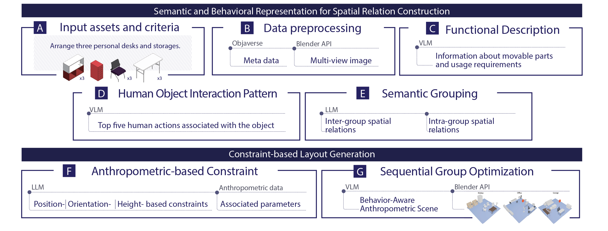
For every Objaverse asset we extract metadata and multi-view renderings in Blender, then prompt the VLM for a functional description (which faces must stay clear, which parts move) and the top-five actions a user is likely to perform with it (e.g., open, push, pull, touch, close).
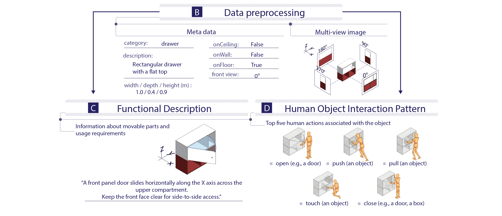
The LLM clusters assets into functional groups (e.g., individual work area, storage area) and emits intra- and inter-group spatial relations. These are compiled into a Blender constraint solver where every distance, orientation, and clearance term is parameterized by user body dimensions (shoulder width H4, arm reach H3, sitting height V1, …).
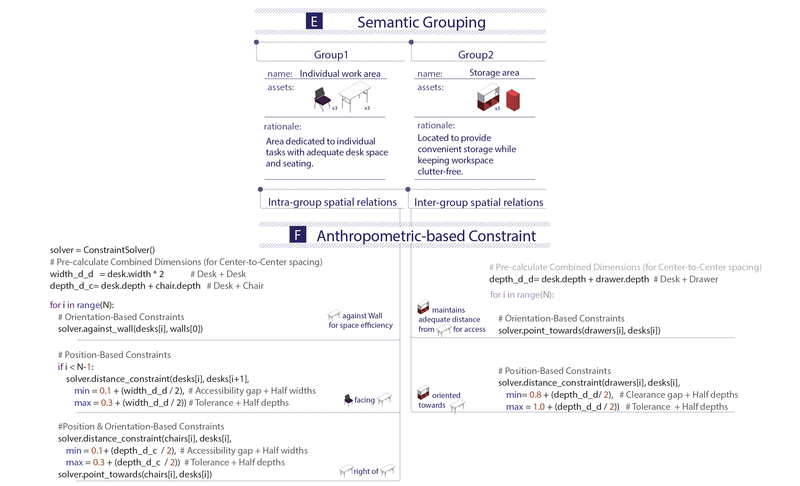
We introduce a per-action Human–Object Manipulation Space: a 3D bounding volume sized by the user's anthropometry that must remain free of collisions for the action to be physically achievable. Reserving this volume — rather than only a 2D walkable path — is what separates Human-Operational layouts from prior Path-Only approaches.
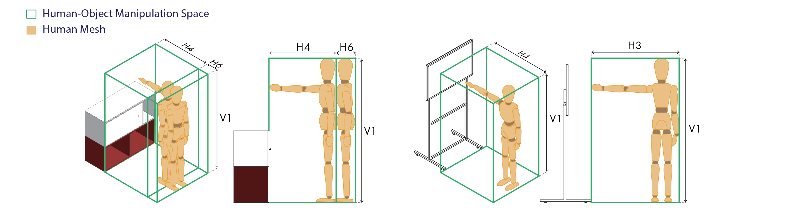
Studies were run in a 9 × 9 × 2.5 m motion-capture room with an inner 5.5 × 5.5 m action zone and an 8-camera rig. For each participant we recorded a video sequence, 3D keypoint JSON, and an SMPL JSON. Anthropometric data was collected from an A-pose so layout constraints could be re-solved per body.
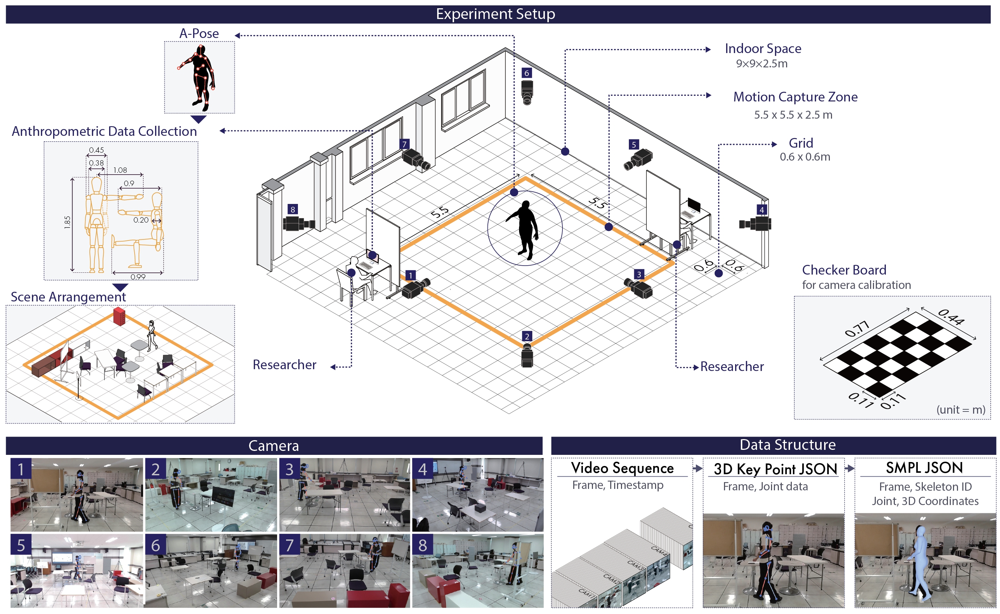
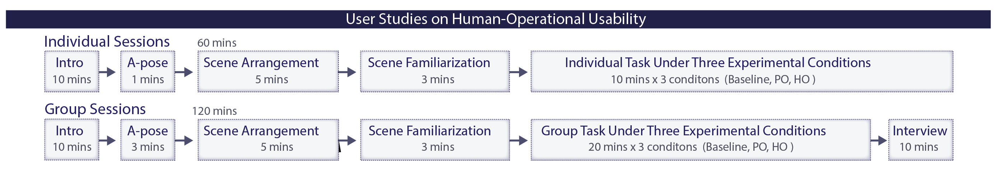
Each generated scene was rated on five axes — Position, Orientation, Semantic Plausibility, Physical Plausibility, and Functional Accessibility — using a 7-point Likert scale on a top/side-view interface.
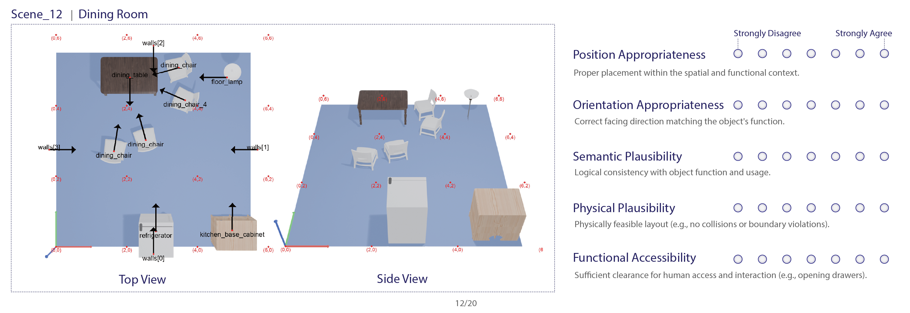
Across both Office and Lounge scenes, the Human-Operational (HO) layout significantly reduced task-completion time, trajectory count, and action-sequence noise, while increasing the volumetric occupancy ratio — meaning users could actually use more of the reserved manipulation space.
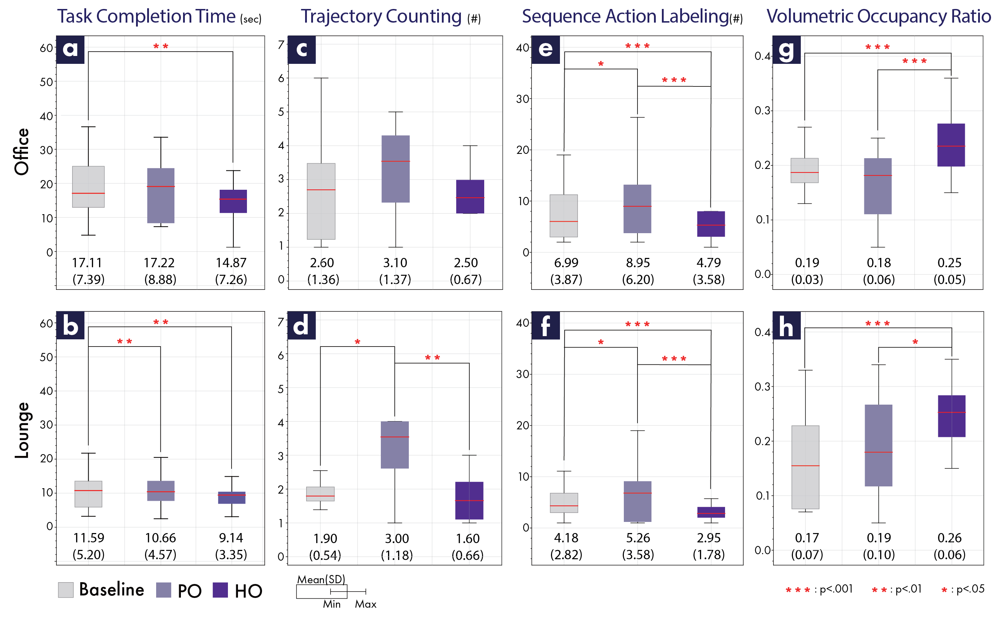
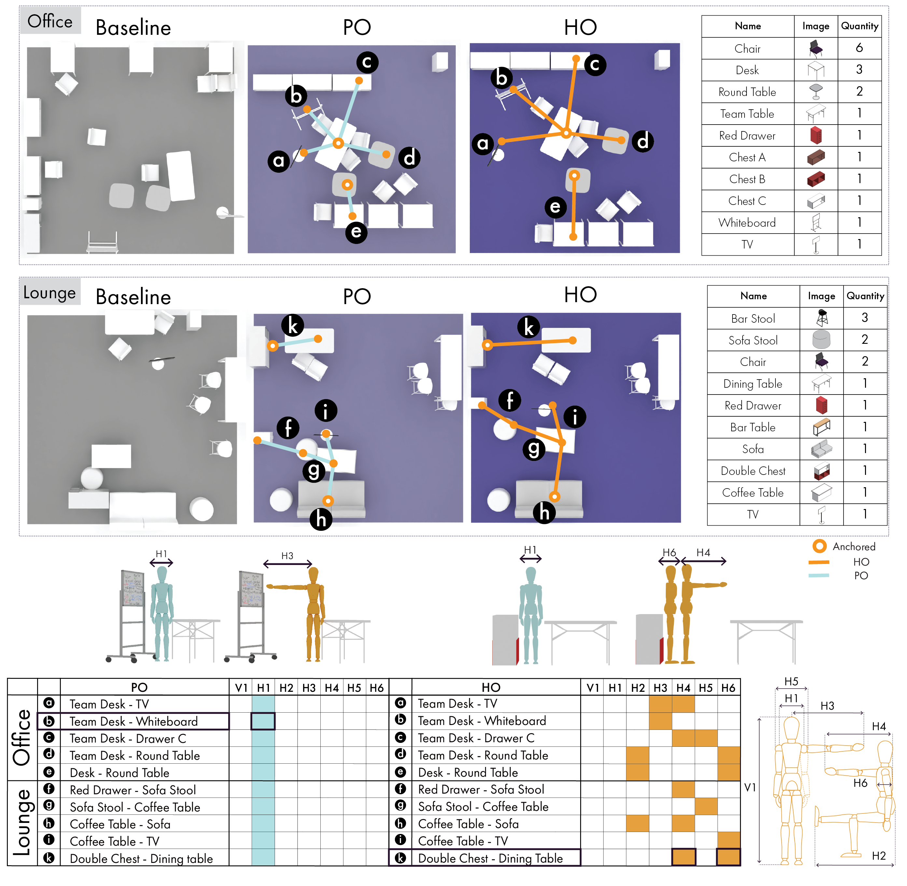
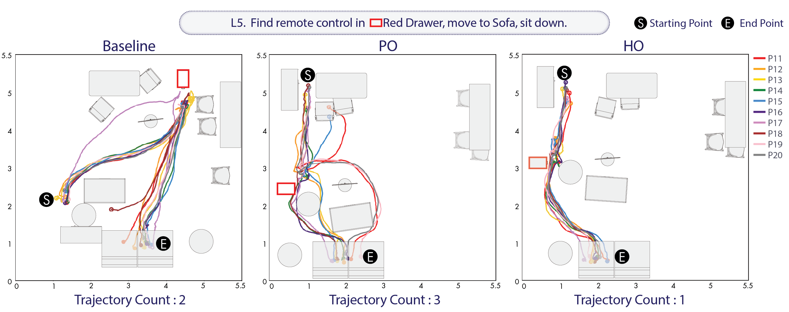
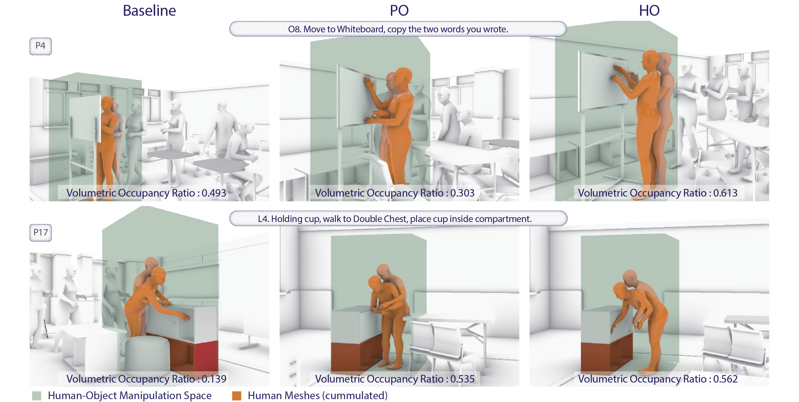
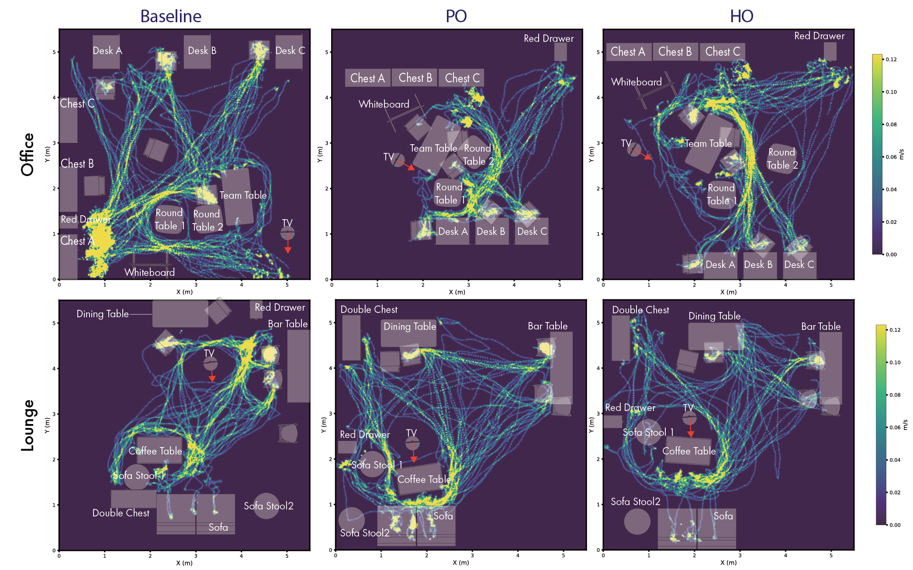
@inproceedings{jin2026behavioraware,
author = {Jin, Semin and Kim, Donghyuk and Ryu, Jeongmin and Hyun, Kyung Hoon},
title = {Behavior-Aware Anthropometric Scene Generation for Human-Usable 3D Layouts},
booktitle = {Proceedings of the 2026 CHI Conference on Human Factors in Computing Systems},
series = {CHI '26},
year = {2026},
publisher = {Association for Computing Machinery},
address = {New York, NY, USA},
location = {Barcelona, Spain},
doi = {10.1145/3772318.3790341},
url = {https://doi.org/10.1145/3772318.3790341}
}